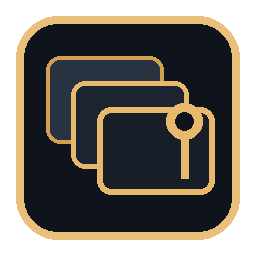
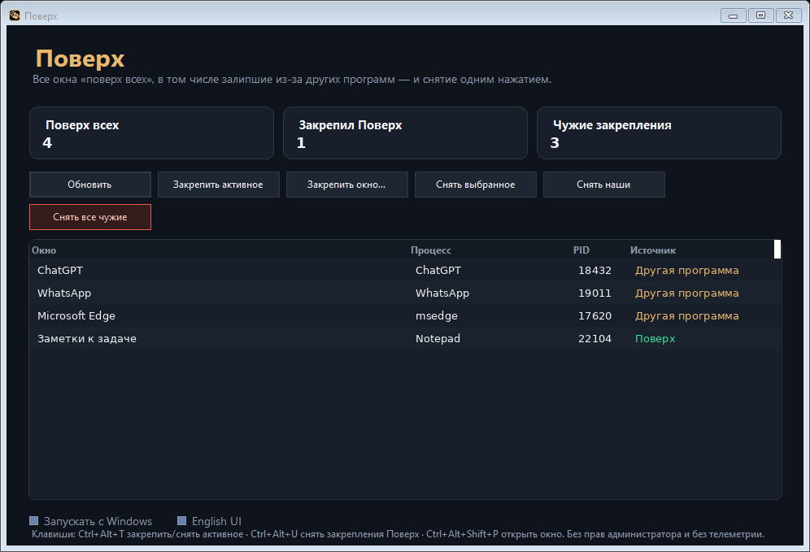

Полный список
Заголовок, процесс, PID и источник: Поверх, другая программа или система.

ПоверхПоверх показывает каждое окно Windows в режиме «поверх всех» — в том числе оставленные другими программами — и снимает их одним нажатием. Без прав администратора и без подписки.
Оплата и магазин ещё не подключены. MVP уже можно собрать и запустить с компьютера.

PowerToys бесплатно закрепляет активное окно. Поверх решает другую боль: когда чат, браузер или монтажная программа остаются поверх всех и не отдают передний план. Вы видите полный список и снимаете чужие флаги.
Заголовок, процесс, PID и источник: Поверх, другая программа или система.
Ctrl+Alt+T — закрепить или снять активное. Ctrl+Alt+U — снять наши. Ctrl+Alt+Shift+P — открыть окно.
Панель задач, Пуск и служебные окна не снимаются массовой кнопкой. Без прав администратора.
Работает в фоне и по желанию стартует вместе с Windows — только для текущего пользователя.
Интерфейс сразу на двух языках, без обязательного аккаунта Microsoft Store.
Нет телеметрии, нет облака, нет подписки в самой программе.
Ориентиры: PinPoint — разовая цена $6.99 в Microsoft Store (блог разработчика, 17 октября 2026); WindowTop Pro — $19 за 3 компьютера на официальном сайте; Actual Window Guard — $39.95. Pro дешевле WindowTop и закрывает боль «чужое окно залипло», которой нет у бесплатного PowerToys Always On Top.
| Продукт | Цена | Что умеет | Ограничение |
|---|---|---|---|
| PowerToys Always On Top | Бесплатно | Закрепить активное окно | Не показывает чужие закрепления |
| PinPoint | $6.99 * | Закрепление, рамка, прозрачность | Магазин Microsoft, узкий инструмент |
| WindowTop Pro | $19 | PiP, прозрачность, якоря | Шире и дороже, если нужна только «отклейка» |
| Поверх Pro | 2 490 ₸ / 590 ₽ / $9.90 | Аудит + закрепление + снять все | Пока Windows-only, магазин не подключён |
* Официальный сайт PinPoint отсылает к витрине Store; сумма $6.99 указана в блоге Automata Labs от 17 октября 2026 как регулярная цена в США.
Нет. Программа запускается от имени текущего пользователя и не меняет брандмауэр и UAC.
Нет. Free бесплатен всегда, Pro и Team задуманы как разовая лицензия. Оплата ещё не принимается.
Системные окна помечены как защищённые и пропускаются при массовом снятии.
В MVP нет. Общий ввод клавиатуры и мыши Mac↔Windows — отдельный продукт (KM-Share), он в работе.
Никуда. Настройки хранятся только в папке пользователя, телеметрии нет.
Публичный установщик в магазине появится вместе с оплатой. Сейчас это рабочий MVP: папка проекта на компьютере и эта страница.